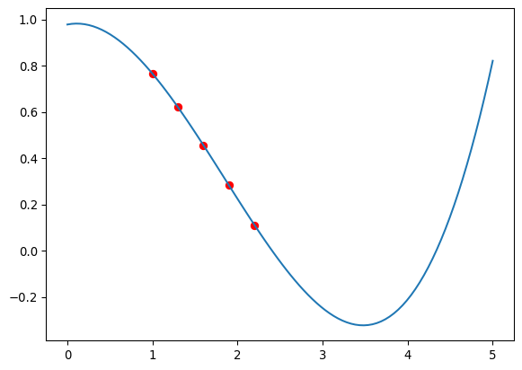
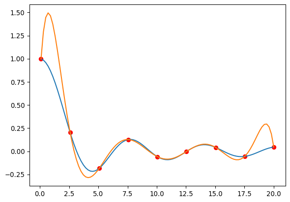

import numpy as np
import matplotlib.pyplot as pltInterpolación
Interpolación Polinomial
Las funciones genéricas son difíciles de integrar o derivar. Una manera de simplificar los cálculos es aproximar la función por medio de un polinomio cuyas derivadas e integrales son casi triviales.
Por otro lado, en muchos casos calcular una función es numéricamente costoso. Podemos entonces calcularla en un número de puntos limitado y asumiendo que es lo suficientemente suave, obtener valores aproximados para cualquier otro punto. A esto se lo llama interpolar la función.
Uno podría pensar que los polinomios de Taylor proveen una buena aproximación a las funciones.
x = np.linspace(0.2, 4, 100)
ex = 1/x
tay0 = np.full(100, 1)
tay1 = 1 - (x - 1)
tay2 = 1 - (x - 1) + (x - 1)**2
tay3 = 1 - (x - 1) + (x - 1)**2 - (x - 1)**3
plt.plot(x, ex, label = 'exacta')
plt.plot(x, tay0, label = 'Taylor 0')
plt.plot(x, tay1, label = 'Taylor 1')
plt.plot(x, tay2, label = 'Taylor 2')
plt.plot(x, tay3, label = 'Taylor 3')
plt.legend()Polinomios de Lagrange
Dados \(n+1\) puntos, hay un único polinomio de grado \(n\) que pasa por todos esos puntos. Ese polinomio está dado por:
\[ P(x) = \sum_{i = 0}^n f(x_i) L_{n,i}(x)\,, \]
donde
\[ L_{n,i}(x) = \prod_{j = 0, j \neq i}^n \frac{(x - x_j)}{(x_i - x_j)} \]
def lagrange(x, puntos):
'''
Interpola una función que pasa por n puntos como un polinomio
de Legendre y lo evalúa en el punto x. Los puntos deben ser
dados como una lista de tuplas (xi, f(xi)).
'''
Lis = np.ones(len(puntos))
fs = np.ones(len(puntos))
for i in range(len(puntos)):
fs[i] = puntos[i][1]
for j in range(len(puntos)):
if j != i:
Lis[i] *= (x - puntos[j][0])/(puntos[i][0] - puntos[j][0])
return sum(fs*Lis)puntos = ((2, 1/2), (2.75, 1/2.75), (4, 1/4))
lagrange(2, puntos)np.float64(0.5)x = np.linspace(2, 4, 100)
plt.plot(x, 1/x)
plt.plot(x, [lagrange(xi, puntos) for xi in x])x = np.linspace(0.5, 10, 100)
plt.plot(x, 1/x)
plt.plot(x, [lagrange(xi, puntos) for xi in x])Teorema: (Teorema generalizado de Rolle) Si \(f\) es una función continua y \(n\) veces diferenciable sobre el intervalo \((a, b)\) y \(f(x) = 0\) en \(n + 1\) puntos diferentes en ese intervalo \(x_o < x_1 < ... < x_n\), entonces existe un número \(\xi \in (x_o, x_n)\) tal que \(f^{(n)}(\xi) = 0\).
La intuición es la siguiente: Hay \(n\) lugares donde la primera derivada es cero (entre los ceros), luego hay \(n - 1\) lugares donde la segunda derivada es cero (entre los ceros de la primera) y así sucesivamente.
Teorema: Sean \(x_0 < x_1 < ...< x_n \in [a,b]\) y \(f\) una función \(C^{n+1}[a,b]\), entonces para cada \(x \in [a,b]\), existe un número \(\xi \in (x_0,x_n)\) tal que
\[ f(x) = P(x) + \frac{f^{(n+1)}(\xi)}{(n+1)!}(x - x_0)(x - x_1)...(x - x_n)\,. \]
Demostración: Si \(x = x_k\) se cumple trivialmente. Sea
\[ g(t) = f(t) - P(t) - [f(x) - P(x)]\frac{(t - x_0)...(t - x_n)}{(x - x_0)...(x - x_n)} \]
esta función es \(n + 1\) veces diferenciable. Además \(g(x_k) = 0\) y \(g(x) = 0\). Entonces por el teorema generalizado de Rolle existe un número \(\xi \in (x_0, x_n)\) tal que \(g^{(n + 1)}(\xi) = 0\) y entonces
\[ f^{(n+1)}(\xi) - P^{(n + 1)}(\xi) - [f(x) - P(x)]\frac{d^{n + 1}}{dt^{n+1}}\frac{(t - x_0)...(t - x_n)}{(x - x_0)...(x - x_n)} = 0 \]
y además
\[ \frac{d^{n+1}}{dt^{n+1}}\frac{(t - x_0)...(t - x_n)}{(x - x_0)...(x - x_n)} = \frac{(n + 1)!}{(x - x_0)...(x - x_n)} \]
y entonces
\[ f^{(n + 1)}(\xi) - [f(x) - P(x)]\frac{(n + 1)!}{(x - x_0)...(x - x_n)} = 0 \]
despejando se obtiene el resultado.
Ejemplo: Queremos preparar una tabla de \(e^x\) para puntos equidistantes entre \(0\) y \(1\). Pedimos que el error de una interpolación lineal entre dos puntos de la tabla sea menor a \(10^{-6}\), encontremos el número de puntos necesarios.
\[ |f(x) - P(x)| \leq \frac{f^{(2)}(\xi)}{2!}|(x - jh)(x - (j + 1)h)| \leq \frac{e}{2}|(x - jh)(x - (j + 1)h)| \]
Para encontrar el máximo de \(|(x - jh)(x - (j + 1)h)|\) definimos \(g(x) = (x - jh)(x - (j+1)h)\) tal que
\[ g'(x) = 2\left(x - jh - \frac{h}{2}\right) \]
que tiene un extremo en \(x = jh + h/2\) para el cual \(g(x) = -h^2/4\), entonces
\[ |f(x) - P(x)| \leq \frac{e}{2}\frac{h^2}{4}. \]
Si queremos que esto sea menor que \(10^{-6}\) necesitamos que \(h \leq (8\times 10^{-6}/e)^{1/2}\), es decir más de \(1/(8\times 10^{-6}/e)^{1/2}\) puntos.
Diferencias divididas
Queremos obtener una lista de los coeficientes del polinomio de la forma
\[ P(x) = a_o + a_1 (x - x_o) + a_2 (x - x_o)(x - x_1) + ... + a_n (x - x_o)...(x - x_{n - 1}) \]
Claramente
\[ a_o = P(x_o) = f(x_o) \]
continuando
\[ f(x_1) = P(x_1) = a_o + a_1 (x_1 - x_o) \]
tal que
\[ a_1 = \frac{f(x_1) - f(x_o)}{x_1 - x_o} \equiv f[x_o, x_1] \]
también
\[ f(x_2) = P(x_2) = a_o + a_1 (x_2 - x_o) + a_2 (x_2 - x_1)(x_2 - x_o) \]
tal que
\[ a_2 = \frac{f(x_2) - f(x_o) - (f(x_1) - f(x_o))(x_2 - x_o)/(x_1 - x_o)}{(x_2 - x_1)(x_2 - x_o)} \]
simplificando
\[ a_2 = \frac{(f(x_2) - f(x_o))/(x_2 - x_o) - (f(x_1) - f(x_o))/(x_1 - x_o)}{(x_2 - x_1)} = \frac{f[x_o, x_2] - f[x_o, x_1]}{(x_2 - x_1)} \equiv f[x_o, x_1, x_2] \]
Se puede demostrar que
\[ a_k = f[x_o, x_1, ..., x_k] \equiv \frac{f[x_o, x_1,...,x_{k-2}, x_k] - f[x_o, x_1,...,x_{k-2},x_{k-1}]}{(x_k - x_{k-1})} \]
def difer(puntos):
n = len(puntos) - 1
Fs = [np.zeros(n + 1)]
for i in range(n + 1):
Fs[0][i] = puntos[i][1]
for i in range(1, n + 1):
Fs.append(np.zeros(n + 1 - i))
for j in range(1, i + 1):
Fs[j][i-j] = (Fs[j-1][i-j+1] - Fs[j-1][i-j])/(puntos[i][0] - puntos[i-j][0])
return [Fs[i][0] for i in range(n + 1)]puntos = np.array([[1, 0.7651977], [1.3, 0.6200860], [1.6, 0.4554022], [1.9, 0.2818186], [2.2, 0.1103623]])coef = difer(puntos)np.prod([i for i in range(0)])np.float64(1.0)def poly(x, coefs):
return sum(coef[n]*np.prod([(x - puntos[i,0]) for i in range(n)]) for n in range(len(coefs)))x = np.linspace(0, 5, 100)
plt.plot(x, [poly(xi, coef) for xi in x])
plt.scatter(puntos[:,0], puntos[:,1], color='red')
Polinomios osculantes
Ahora queremos requerir que nuestros polinomios no sólo pasen por todos los puntos entre los cuales se quiere interpolar, si no que además coincidan también sus derivadas. Este caso no se da con mucha frecuencia ya que es raro tener las derivadas de una función que se quiere interpolar, pero puede ser de alguna utilidad.
Los polinomios que satisfacen
\[ P(x_i) = f(x_i)\,,\quad P'(x_i) = f'(x_i)\,, \]
en \(n\) puntos, se llaman polinomios de Hermite. Estos polinomios deben ser de grado \(2n\) para satisfacer estas condiciones.
Un modo de obtener los polinomios de Hermite es a través de las diferencias divididas. Sólo que ahora contamos cada punto dos veces: \(z_{2i} = z_{2i + 1} = x_i\). Además tomamos por definición
\[ f[z_{2i}, z_{2i + 1}] = f'(x_i). \]
El polinomio de Hermite está entonces dado por
\[ P(x) = f[z_o] + \sum_{k=1}^{2n + 1} f[z_o, ..., z_k] (z - z_o)...(z - z_{k-1}) \]
import numpy as np
import matplotlib.pyplot as pltdef hermite(puntos):
n = len(puntos) - 1
zs = np.zeros(2*n + 2) # Creamos el doble de puntos
Fs = [np.zeros(2*n + 2), np.zeros(2*n + 1)] # Creamos las primeras columnas de f[]
# Llenamos las dos primeras columnas de f[]
for i in range(n + 1):
zs[2*i] = puntos[i][0]
zs[2*i + 1] = puntos[i][0]
Fs[0][2*i] = puntos[i][1]
Fs[0][2*i+1] = puntos[i][1]
Fs[1][2*i] = puntos[i][2]
if i != 0:
Fs[1][2*i-1] = (Fs[0][2*i] - Fs[0][2*i-1])/(zs[2*i] - zs[2*i-1])
# Calculamos las diferencias divididas
for i in range(2, 2*n + 2):
Fs.append(np.zeros(2*n + 2 - i))
for j in range(2, i + 1):
Fs[j][i-j] = (Fs[j-1][i-j+1] - Fs[j-1][i-j])/(zs[i] - zs[i-j])
return [Fs[i][0] for i in range(2*n + 2)]puntos = [[1.3, 0.6200860, -0.5220232], [1.6, 0.4554022, -0.5698959], [1.9, 0.2818186, -0.5811571]]coefs = hermite(puntos)def poly_hermite(x, coefs, puntos):
zs = [puntos[n//2][0] for n in range(len(coefs))]
s = 0
terms = [(x - zs[i]) for i in range(len(coefs))]
for n in range(len(coefs)):
s += coefs[n]*np.prod(terms[:n])
return spoly_hermite(1.5, coefs, puntos)np.float64(0.5118277017283951)Hagamos un ejemplo. Interpolemos la función de \(1/x\) entre \(0.2\) y \(2\) usando tres puntos usando un polinomio de Lagrange y luego usando un polinomio de Hermite.
def difer(puntos):
n = len(puntos) - 1
Fs = [np.zeros(n + 1)]
for i in range(n + 1):
Fs[0][i] = puntos[i][1]
for i in range(1, n + 1):
Fs.append(np.zeros(n + 1 - i))
for j in range(1, i + 1):
Fs[j][i-j] = (Fs[j-1][i-j+1] - Fs[j-1][i-j])/(puntos[i][0] - puntos[i-j][0])
return [Fs[i][0] for i in range(n + 1)]puntos = np.array([[0.5, 1/0.5, -1/0.5**2], [1,1,-1], [2,1/2,-1/4]])coefs_lagrange = difer(puntos)def poly_lagrange(x, coefs, puntos):
return sum(coefs[n]*np.prod([(x - puntos[i,0]) for i in range(n)]) for n in range(len(coefs)))coefs_hermite = hermite(puntos)x = np.linspace(0.15, 2.5, 100)
exact = 1/x
lag = [poly_lagrange(xi, coefs_lagrange, puntos) for xi in x]
her = [poly_hermite(xi, coefs_hermite, puntos) for xi in x]
plt.plot(x, exact)
plt.plot(x, lag)
plt.plot(x, her)Splines cúbicas
Los polinomios de alto orden tienen problemas al intentar interpolar una función. Intentemos un ejemplo tomando muchos puntos.
mini = 0.1
maxi = 20
order = 9
xp = np.linspace(mini, maxi, order)
puntos = np.array([[xi, np.sin(xi)/xi] for xi in xp])
coefs_lagrange = difer(puntos)
x = np.linspace(mini, maxi, 100)
exact = np.sin(x)/x
lag = [poly_lagrange(xi, coefs_lagrange, puntos) for xi in x]
plt.scatter(puntos[:,0], puntos[:,1], color='red')
plt.plot(x, exact)
plt.plot(x, lag)
Lo mismo ocurre cuando los puntos de datos contienen un error numérico.
Por este motivo es más práctico hacer una interpolación de la función tramo por tramo.
def find_ind(x, puntos):
for i in range(len(puntos)):
if x < puntos[i,0] and i != 0:
return i-1
def lin_interp(x, puntos):
if x >= puntos[len(puntos)-1,0]:
return puntos[len(puntos)-1,1]
elif x <= puntos[0,0]:
return puntos[0,1]
i = find_ind(x, puntos)
Lo = puntos[i][1]*(x - puntos[i+1][0])/(puntos[i][0] - puntos[i+1][0])
L1 = puntos[i+1][1]*(x - puntos[i][0])/(puntos[i+1][0] - puntos[i][0])
return Lo + L1mini = 0.1
maxi = 20
order = 9
xp = np.linspace(mini, maxi, order)
puntos = np.array([[xi, np.sin(xi)/xi] for xi in xp])
x = np.linspace(mini, maxi, 100)
exact = np.sin(x)/x
lin = [lin_interp(xi, puntos) for xi in x]
plt.scatter(puntos[:,0], puntos[:,1], color='red')
plt.plot(x, exact)
plt.plot(x, lin)Para lograr un mejor ajuste (más suave) podemos imponer más condiciones. Por ejemplo podemos pedir que la derivada sea igual a la derivada de la función que queremos interpolar. Pero con frecuencia no tenemos la derivada de la función.
Sea \(S_i\) el polinomio que interpola entre los puntos \(x_i\) y \(x_{i+1}\). Podemos pedir que la derivada de la interpolación sea continua, es decir
\[ S_{i}'(x_{i+1}) = S_{i+1}'(x_{i+1}) \]
Estas son \(n - 2\) condiciones adicionales (sobre las \(2n - 2\) condiciones \(S_{i}(x_i) = f(x_i)\) y \(S_{i}(x_{i+1}) = f(x_{i+1})\)). Tendremos \(n-1\) polinomios interpolantes, tal que para lograr imponer estas condiciones es neceario usar polinomios cuadráticos, cada uno de los cuales contiene tres coeficientes para un total de \(3n - 3\).
El tipo de polinomios más usados tienen una condición sobre las anteriores
\[ S_{i}''(x_{i+1}) = S_{i+1}''(x_{i+1}) \]
Ahora tendremos \(4n - 6\) condiciones. Para cumplirlas necesitamos polinomios de orden al menos cúbico, para un total de \(4n - 4\) coeficientes libres. A estos polinomios se los llama splines cúbicas. Pero para fijarlos completamente falta una condición. Escogemos la que es más útil en la práctica
\[ S_0''(x_o) = S_{n-1}''(x_n) = 0 \]
A estas se las llama splines naturales. Se pueden encontrar resolviendo un sistema de \(4n - 4\) ecuaciones.
def spline_coefs(puntos):
n = len(puntos) - 1
h = np.zeros(n)
for i in range(n):
h[i] = puntos[i + 1][0] - puntos[i][0]
a = puntos[:,1]
alpha = np.zeros(n - 1)
for i in range(1, n):
alpha[i-1] = (3/h[i])*(a[i+1] - a[i]) - (3/h[i-1])*(a[i] - a[i-1])
# Se resuelve un sistema de ecuaciones:
l = np.ones(n + 1)
mu = np.zeros(n)
z = np.zeros(n + 1)
for i in range(1, n):
l[i] = 2*(puntos[i+1][0] - puntos[i-1][0]) - h[i-1]*mu[i-1]
mu[i] = h[i]/l[i]
z[i] = (alpha[i-1] - h[i-1]*z[i-1])/l[i]
b = np.zeros(n)
c = np.zeros(n+1)
d = np.zeros(n)
for j in range(n-1,-1,-1):
c[j] = z[j] - mu[j]*c[j+1]
b[j] = (a[j+1] - a[j])/h[j] - h[j]*(c[j+1] + 2*c[j])/3
d[j] = (c[j+1] - c[j])/(3*h[j])
return a, b, c, ddef spline_eval(x, coefs, puntos):
if x >= puntos[-1,0]:
return puntos[-1,1]
elif x <= puntos[0,0]:
return puntos[0,1]
i = find_ind(x, puntos)
a, b, c, d = coefs
return (a[i] + b[i]*(x - puntos[i][0]) + \
c[i]*(x - puntos[i][0])**2 + d[i]*(x - puntos[i][0])**3)mini = 0.1
maxi = 20
order = 9
xp = np.linspace(mini, maxi, order)
puntos = np.array([[xi, np.sin(xi)/xi] for xi in xp])
coefs= spline_coefs(puntos)
x = np.linspace(mini, maxi, 100)
exact = np.sin(x)/x
spline = [spline_eval(xi, coefs, puntos) for xi in x]
plt.scatter(puntos[:,0], puntos[:,1], color='red')
plt.plot(x, exact)
plt.plot(x, spline)Scipy
# Tomado de: https://docs.scipy.org/doc/scipy/reference/tutorial/interpolate.html
from scipy.interpolate import interp1d
x = np.linspace(0, 10, num=11, endpoint=True)
y = np.cos(-x**2/9.0)
f = interp1d(x, y)
f2 = interp1d(x, y, kind='cubic')
xnew = np.linspace(0, 10, num=41, endpoint=True)
import matplotlib.pyplot as plt
plt.plot(x, y, 'o', xnew, f(xnew), '-', xnew, f2(xnew), '--')
plt.legend(['data', 'linear', 'cubic'], loc='best')
plt.show()Tareas
Tarea 6.6
Use cinco puntos equidistantes para encontrar un polinomio interpolante de la función \(f(x) = \sinh(x)\) entre \(x = -5\) y \(x = 5\). Grafique el polinomio. Estime el error cometido para cada \(x\), usando la fórmula de error de los polinomios de Legendre. Luego grafique \(|f(x) - P(x)|\) y compare con el error estimado.
Tarea 6.7
Use \(10\) puntos equidistantes para encontrar un polinomio interpolante de la función \(f(x) = \tanh(x)\) entre \(x = -10\) y \(x = 10\). Compare el polinomio con la función obtenida. Explique.
Tarea 6.8
Use una función interpolante para encontrar una buena aproximación a una gaussiana con \(\sigma = 1\) y \(\mu = 0\) entre \(x = 0\) y \(x = 2\). ¿Se puede usar ese mismo polinomio para aproximar la gaussiana en \(x = 3\)? De una respuesta cuantitativa y argumente.
Tarea 6.9
Escriba un código similar a la interpolación lineal de la clase, pero que realice una interpolación cuadrática. Es decir, este código interpola usando una parábola para cada trío de puntos. Grafique sus resultados para el mismo ejemplo usado en la interpolación lineal.
Tarea 6.10
Considere la función \(f(x) = 4 x^3 - 3x^2 + x -5\). Use sólo los dos puntos \(x = -1\) y \(x = 1\) para interpolar usando una spline cúbica entre \(x =-1\) y \(x = 1\). Explique por qué la spline cúbica es diferente del polinomio original si ambos son polinomios cúbicos que pasan por los mismos puntos en \(x = -1\) y \(x = 1\). Ahora repita la comparación usando la interpolación de splines por intervalos con \(4\) puntos equidistantes en el mismo intervalo.